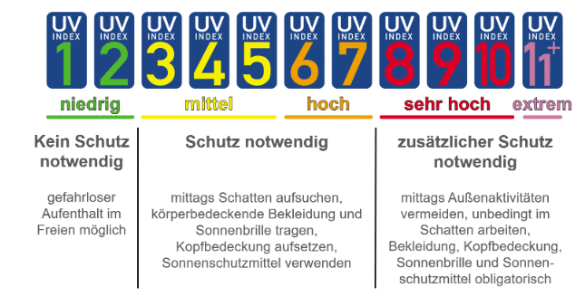
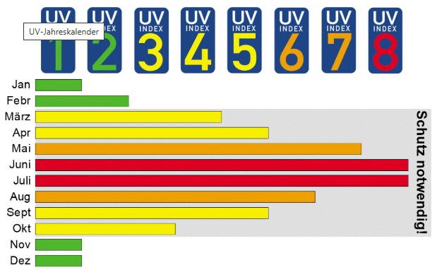

Der UV-Index ist abhängig vom Sonnenstand (geografische Breite, Tages- und Jahreszeit), der Bewölkung, der Ozonschichtdicke und der Höhe. Er wird in Wettervorhersagen angegeben bzw. kann mit Apps oder Farbkarten aktuell abgerufen werden.


Quelle: BAUA